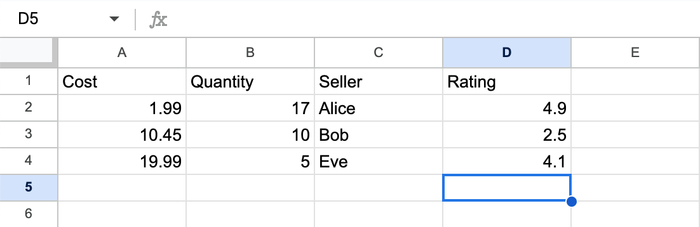

Lecture 2: August 9th, 2023#
Today:
First round of homework posted! Tips and tricks for getting started.
Wrap up material from Lecture 1
More EDA Unit 1
Quick recap from last time#
import numpy as np
rng = np.random.default_rng()
# random reals between 0 and 10
arr = 10*rng.random(1000)
#Calculate proportion of elements which are larger than 7
sum(arr > 7)/len(arr)
0.293
Convert the array to a list and answer the same question.
Disclaimer: converting to a list is not something we’d typically do in this example. I’m doing this problem just to remind you of lists and list comprehension.
mylist = list(arr)
type(mylist)
list
mylist[:10]
[9.581556376710257,
1.22761642342042,
4.063460148405874,
2.181424432665504,
7.1014132150660405,
8.978692285144788,
1.405439113787339,
5.36158330683416,
5.003475664763718,
9.190743899609155]
# List comprehension
# Keep elements which are larger than 7
newlist = [x for x in mylist if x > 7]
len(newlist)/len(mylist)
0.293
Seeded Random Numbers#
Excellent question asked in class: why do we get different numbers in the previous examples?
Question: Can you think of a situation where you want to generate random numbers, but once they are generated you want them to stay fixed.
Some responses from the chat:
passwords
randomly generated keys
Yasmeen’s favorite example:
Autograded quiz questions :)
#Notice, every time we run this cell we get different values
arr = rng.integers(0,7,10)
arr
array([1, 5, 2, 0, 6, 4, 5, 4, 0, 1])
The way we can get reproducible random numbers is by specifying a seed when we instantiate our random number generator.
#seed can be any integer I want
rng = np.random.default_rng(seed=392837)
For those of you coding along, if you run the next cell we should all get exactly the same thing. Note: I ran this cell a few times in lecture, so if you’re trying this on your own after, it might take a few iterations for these exact numbers to show up.
arr = rng.integers(0,7,10)
arr
array([6, 1, 2, 2, 4, 3, 0, 6, 5, 1])
Here is a warning about using seeded random numbers. We might expect arr to always stay the same…
# These values of arr are different than the ones we got above...
arr2 = rng.integers(0,7,10)
arr2
array([3, 1, 2, 0, 6, 0, 2, 1, 0, 2])
Part of the issue: every time we run rng.integers(0,7,10) new random numbers are generated. When we don’t specify a seed, there is no discernable pattern to the random numbers that are generated. The difference with a seed is that the numbers generated follow a specific pattern that can be reproduced.
With a seeded rng, we know what sequence of numbers will appear.
#Here is how we should write our code
#notice rng and arr are written in the same block
rng = np.random.default_rng(seed=392837)
arr = rng.integers(0,7,10)
arr
array([6, 1, 2, 2, 4, 3, 0, 6, 5, 1])
Boolean Arrays and Boolean Indexing (NumPy)#
arr
array([6, 1, 2, 2, 4, 3, 0, 6, 5, 1])
Make a boolean array indicating where
arris equal to 2.
arr == 2
array([False, False, True, True, False, False, False, False, False,
False])
Count how many of the entires are equal to 2.
# Method 1: built-in function
sum(arr == 2)
2
# Method 2: using sum method
type(arr == 2)
numpy.ndarray
#.sum() faster in general :)
(arr == 2).sum()
2
Make a boolean array indicating where
arris strictly less than 2 or greater than or equal to 4.
arr < 2
array([False, True, False, False, False, False, True, False, False,
True])
arr >= 4
array([ True, False, False, False, True, False, False, True, True,
False])
Quick reminder of logic:
In base python (without external libraries): type out
and,or,notIn NumPy and pandas: use symbols
&,|,~
(arr < 2) | (arr >= 4)
array([ True, True, False, False, True, False, True, True, True,
True])
# should give an error
(arr < 2) or (arr >= 4)
---------------------------------------------------------------------------
ValueError Traceback (most recent call last)
Input In [22], in <cell line: 2>()
1 # should give an error
----> 2 (arr < 2) or (arr >= 4)
ValueError: The truth value of an array with more than one element is ambiguous. Use a.any() or a.all()
Using boolean indexing, get the subarray of
arrcontaining values which are strictly less than 2 or greater than or equal to 4.
arr[(arr < 2) | (arr >= 4)]
array([6, 1, 4, 0, 6, 5, 1])
Using
seed = 100, make a \(10 \times 3\) NumPy array calledarr2of random integers between 0 (inclusive) and 5 (exclusive).
rng = np.random.default_rng(seed=100)
arr2 = rng.integers(0,5,size=(10,3))
arr2
array([[3, 4, 0],
[2, 0, 1],
[2, 0, 2],
[4, 4, 2],
[2, 3, 4],
[4, 0, 3],
[3, 0, 2],
[4, 3, 1],
[1, 3, 0],
[2, 2, 2]])
Define a variable
colto be the index 0 column ofarr2.
col = arr2[:,0]
col
array([3, 2, 2, 4, 2, 4, 3, 4, 1, 2])
Notice the difference between the previous block of code and the following examples:
#arr2[:] says get all of the rows
#[0] get the index 0 row of arr2[:]
arr2[:][0]
array([3, 4, 0])
#Get the last row of arr2
arr2[:,-1]
array([0, 1, 2, 2, 4, 3, 2, 1, 0, 2])
Get the subarray of
arr2of all rows which begin with the number 2.
arr2
array([[3, 4, 0],
[2, 0, 1],
[2, 0, 2],
[4, 4, 2],
[2, 3, 4],
[4, 0, 3],
[3, 0, 2],
[4, 3, 1],
[1, 3, 0],
[2, 2, 2]])
#where col is equal to 2, I want to keep the corresponding row
col
array([3, 2, 2, 4, 2, 4, 3, 4, 1, 2])
col == 2
array([False, True, True, False, True, False, False, False, False,
True])
arr2[col == 2]
array([[2, 0, 1],
[2, 0, 2],
[2, 3, 4],
[2, 2, 2]])
More Complex Boolean Indexing (NumPy)#
Make a \(10 \times 3\) boolean array indicating where
arr2is equal to 2.
arr2.shape
(10, 3)
arr2 == 2
array([[False, False, False],
[ True, False, False],
[ True, False, True],
[False, False, True],
[ True, False, False],
[False, False, False],
[False, False, True],
[False, False, False],
[False, False, False],
[ True, True, True]])
(arr2 == 2).shape
(10, 3)
Use the
summethod withaxis=1to find how many 2s there are in each row.
arr2
array([[3, 4, 0],
[2, 0, 1],
[2, 0, 2],
[4, 4, 2],
[2, 3, 4],
[4, 0, 3],
[3, 0, 2],
[4, 3, 1],
[1, 3, 0],
[2, 2, 2]])
axis tells me what direction I should do my computation in.
(arr2 == 2).sum(axis=1)
array([0, 1, 2, 1, 1, 0, 1, 0, 0, 3])
Create a subarray of
arr2containing only rows which have at least two 2s.
counts = (arr2 == 2).sum(axis=1)
arr2[counts > 1]
array([[2, 0, 2],
[2, 2, 2]])
We can also use boolean indexing to specify which rows and how many of each we want!
arr2
array([[3, 4, 0],
[2, 0, 1],
[2, 0, 2],
[4, 4, 2],
[2, 3, 4],
[4, 0, 3],
[3, 0, 2],
[4, 3, 1],
[1, 3, 0],
[2, 2, 2]])
#First set of brackets says to index
#Second set of brackets is the list of rows I want
arr2[[9,9,9]]
array([[2, 2, 2],
[2, 2, 2],
[2, 2, 2]])
#First set of brackets says to index
#Second set of brackets is the list of rows I want
arr2[[9,0,1]]
array([[2, 2, 2],
[3, 4, 0],
[2, 0, 1]])
arr2
array([[3, 4, 0],
[2, 0, 1],
[2, 0, 2],
[4, 4, 2],
[2, 3, 4],
[4, 0, 3],
[3, 0, 2],
[4, 3, 1],
[1, 3, 0],
[2, 2, 2]])
# Notice the difference from the previous cell
#Go to row 9, column 0
arr2[9,0]
2
arr2[[9,0]]
array([[2, 2, 2],
[3, 4, 0]])
More Examples with axis Keyword Argument#
rng = np.random.default_rng(seed=100)
arr = rng.integers(0,5,size=(10,3))
arr
array([[3, 4, 0],
[2, 0, 1],
[2, 0, 2],
[4, 4, 2],
[2, 3, 4],
[4, 0, 3],
[3, 0, 2],
[4, 3, 1],
[1, 3, 0],
[2, 2, 2]])
Let’s explore what we get by evaluating each of the following:
arr.max()
# Takes maximum over entire array
arr.max()
4
arr.max(axis=0)
#Taking maximum over each column
#Notice we're "moving" up/down
arr.max(axis=0)
array([4, 4, 4])
arr
array([[3, 4, 0],
[2, 0, 1],
[2, 0, 2],
[4, 4, 2],
[2, 3, 4],
[4, 0, 3],
[3, 0, 2],
[4, 3, 1],
[1, 3, 0],
[2, 2, 2]])
arr.max(axis=1)
#Taking maximum over each row
#Notice we're "moving" left/right
arr.max(axis=1)
array([4, 2, 2, 4, 4, 4, 3, 4, 3, 2])
arr
array([[3, 4, 0],
[2, 0, 1],
[2, 0, 2],
[4, 4, 2],
[2, 3, 4],
[4, 0, 3],
[3, 0, 2],
[4, 3, 1],
[1, 3, 0],
[2, 2, 2]])
Then, let’s answer the following question: In how many rows of arr is the max entry in that row 2 or less?
rowmax = arr.max(axis=1)
rowmax
array([4, 2, 2, 4, 4, 4, 3, 4, 3, 2])
rowmax <= 2
array([False, True, True, False, False, False, False, False, False,
True])
General Strats:
If a question asks to count something, typically want to use
sumIf a question asks for a sub-array/sub-DataFrame, want to use boolean indexing
sum(rowmax <= 2)
3
How could I get the subarray of
arrwhere each row has a maximum of 2 or less?
arr[rowmax <= 2]
array([[2, 0, 1],
[2, 0, 2],
[2, 2, 2]])
Functions in Python#
Task: Write a function getsub which takes as input a NumPy array arr and an integer n, and as output returns the subarray of arr containg all rows with at least two entries equal to n.
#We'll see the basic syntax for functions
def getsub(arr, n):
counts = (arr == n).sum(axis=1)
subarr = arr[counts >= 2] #If I end the function here something is missing...nothing is returned!
return subarr
Now, let’s test our code with a much larger arr!
rng = np.random.default_rng(seed=100)
arr = rng.integers(0,5,size=(100,3))
#Try to predict what the following will return
getsub(arr,5)
array([], shape=(0, 3), dtype=int64)
getsub(arr,4)
array([[4, 4, 2],
[2, 4, 4],
[4, 4, 2],
[4, 2, 4],
[4, 4, 1],
[4, 4, 1],
[4, 0, 4]])
Exercise: Try to write the same function using for-loops. Using for-loops is definitely a worse strategy, but if it’s your first time coding/using Python it’s good pratice.
Why pandas? Wrong Approach 1#
We can imagine the following is a small set of data we want to work with. Motivating Question: How can I represent this data in python?

Pure python approach: we’ll store data as a list of lists. Each row will be a list in a bigger list.
mylist = [
[1.99,17,"Alice",4.9],
[10.45,10,"Bob",2.5],
[19.99,5,"Eve",4.1]
]
mylist
[[1.99, 17, 'Alice', 4.9], [10.45, 10, 'Bob', 2.5], [19.99, 5, 'Eve', 4.1]]
Already, we can see that this method is pretty clunky.
Compute the average value in the “Rating” column (the column at index 3)
ratings = []
for inside_list in mylist:
print(inside_list)
print("Hello, World")
[1.99, 17, 'Alice', 4.9]
Hello, World
[10.45, 10, 'Bob', 2.5]
Hello, World
[19.99, 5, 'Eve', 4.1]
Hello, World
#Reminder, indenting
ratings = []
for inside_list in mylist:
print(inside_list)
print("Hello, World")
[1.99, 17, 'Alice', 4.9]
[10.45, 10, 'Bob', 2.5]
[19.99, 5, 'Eve', 4.1]
Hello, World
ratings = []
for inside_list in mylist:
ratings.append(inside_list[-1])
ratings
[4.9, 2.5, 4.1]
#compute average
sum(ratings)/len(ratings)
3.8333333333333335
Aside on Numerical Precision and Making Copies#
We can kind of see in the previous example that the average we computed is not precisely the mathematical average. Main Point: Working with floats is always going to have some level of precision error.
#more obvious example
new_ratings = [4.7,4.4,2]
On a calculator, we get that the average of new_ratings is exactly 3.7 – let’s see what python says…
sum(new_ratings)/len(new_ratings)
3.7000000000000006
sum(new_ratings)/len(new_ratings) == 3.7
False
#famous python example
#convert 0.1 to binary...do you see what's going wrong?
0.1 + 0.1 + 0.1 == 0.3
False
General python/coding issue: working with floats introduces precision errors. There aren’t many ways to get around this, but we tend to avoid asking if things are equal. Checking equality with integers, however, is usually fine.
The next issue is something that might be a little strange if you’ve never seen it before.
example_list = [1,2,3]
example_list2 = example_list
example_list
[1, 2, 3]
example_list2
[1, 2, 3]
example_list2.append("JACKY")
example_list2
[1, 2, 3, 'JACKY']
example_list
[1, 2, 3, 'JACKY']
The short answer to why this happens is that example_list and example_list2 refer to the same object in memory. When one gets changed, so does the other.
To avoid this happening, I can make a copy!
example_list3 = example_list.copy()
example_list3.append("Yasmeen")
example_list3
[1, 2, 3, 'JACKY', 'Yasmeen']
example_list
[1, 2, 3, 'JACKY']
![Created in deepnote.com]() Created in Deepnote
Created in Deepnote